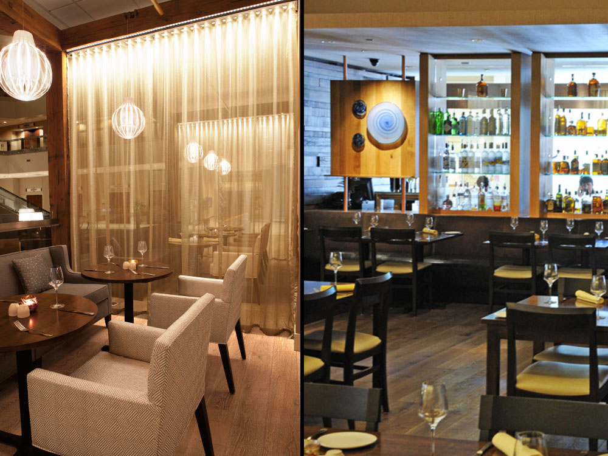

FRCH worked to re-shuffle the hospitality experience simply by creating new associations between lobby level spaces. Using the design of Sway, a restaurant that celebrates modern southern-style cuisine as the design and space-defining nucleus. Polished wood framing and richly appointed furnishings spill from the restaurant to create a more intimate lobby atmosphere, where southern-styled relaxation is the highest priority. Sway’s bar, boldly positioned to the side of the lobby, easily influences and services the entire space creating a truly flexible social hub while backlit stained glass and handcrafted metal details deliver casual urban vibe of cool elegance all day long.
- 